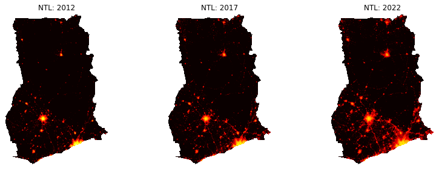
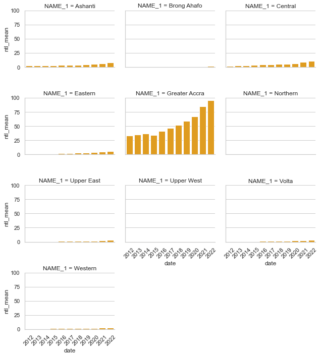

Examples Using blackmarblepy Package#
Table of Contents
Setup
Make raster of nighttime lights
Make raster stack of nighttime lights across multiple time periods
Map of nighttime lights
Compute trends on nighttime lights over time
Exporting data to files
Setup #
Install blackmarblepy#
! pip uninstall blackmarblepy --yes
WARNING: Skipping blackmarblepy as it is not installed.
#! pip install git+https://github.com/worldbank/blackmarblepy.git
! pip install git+https://github.com/worldbank/blackmarblepy.git@rob-documentation
Collecting git+https://github.com/worldbank/blackmarblepy.git@rob-documentation
Cloning https://github.com/worldbank/blackmarblepy.git (to revision rob-documentation) to /private/var/folders/m1/8h14xfm56hd6qfgz6btm1rd80000gn/T/pip-req-build-ue8ckc4a
Running command git clone -q https://github.com/worldbank/blackmarblepy.git /private/var/folders/m1/8h14xfm56hd6qfgz6btm1rd80000gn/T/pip-req-build-ue8ckc4a
Running command git checkout -b rob-documentation --track origin/rob-documentation
Switched to a new branch 'rob-documentation'
Branch 'rob-documentation' set up to track remote branch 'rob-documentation' from 'origin'.
Resolved https://github.com/worldbank/blackmarblepy.git to commit fadb542197a2ad46705f11290aa9d5ed465ce739
Requirement already satisfied: pandas in /Users/robmarty/opt/anaconda3/lib/python3.8/site-packages (from blackmarblepy==0.1.0) (1.4.1)
Requirement already satisfied: numpy in /Users/robmarty/opt/anaconda3/lib/python3.8/site-packages (from blackmarblepy==0.1.0) (1.21.2)
Requirement already satisfied: requests in /Users/robmarty/opt/anaconda3/lib/python3.8/site-packages (from blackmarblepy==0.1.0) (2.27.1)
Requirement already satisfied: datetime in /Users/robmarty/opt/anaconda3/lib/python3.8/site-packages (from blackmarblepy==0.1.0) (5.2)
Requirement already satisfied: geopandas in /Users/robmarty/opt/anaconda3/lib/python3.8/site-packages (from blackmarblepy==0.1.0) (0.10.2)
Requirement already satisfied: rasterstats in /Users/robmarty/opt/anaconda3/lib/python3.8/site-packages (from blackmarblepy==0.1.0) (0.18.0)
Requirement already satisfied: h5py in /Users/robmarty/opt/anaconda3/lib/python3.8/site-packages (from blackmarblepy==0.1.0) (2.10.0)
Requirement already satisfied: rasterio in /Users/robmarty/opt/anaconda3/lib/python3.8/site-packages (from blackmarblepy==0.1.0) (1.3.6)
Requirement already satisfied: httpx in /Users/robmarty/opt/anaconda3/lib/python3.8/site-packages (from blackmarblepy==0.1.0) (0.25.0)
Requirement already satisfied: zope.interface in /Users/robmarty/opt/anaconda3/lib/python3.8/site-packages (from datetime->blackmarblepy==0.1.0) (5.4.0)
Requirement already satisfied: pytz in /Users/robmarty/opt/anaconda3/lib/python3.8/site-packages (from datetime->blackmarblepy==0.1.0) (2021.3)
Requirement already satisfied: shapely>=1.6 in /Users/robmarty/opt/anaconda3/lib/python3.8/site-packages (from geopandas->blackmarblepy==0.1.0) (1.8.1.post1)
Requirement already satisfied: fiona>=1.8 in /Users/robmarty/opt/anaconda3/lib/python3.8/site-packages (from geopandas->blackmarblepy==0.1.0) (1.8.21)
Requirement already satisfied: pyproj>=2.2.0 in /Users/robmarty/opt/anaconda3/lib/python3.8/site-packages (from geopandas->blackmarblepy==0.1.0) (3.3.0)
Requirement already satisfied: six>=1.7 in /Users/robmarty/opt/anaconda3/lib/python3.8/site-packages (from fiona>=1.8->geopandas->blackmarblepy==0.1.0) (1.16.0)
Requirement already satisfied: munch in /Users/robmarty/opt/anaconda3/lib/python3.8/site-packages (from fiona>=1.8->geopandas->blackmarblepy==0.1.0) (2.5.0)
Requirement already satisfied: click-plugins>=1.0 in /Users/robmarty/opt/anaconda3/lib/python3.8/site-packages (from fiona>=1.8->geopandas->blackmarblepy==0.1.0) (1.1.1)
Requirement already satisfied: setuptools in /Users/robmarty/opt/anaconda3/lib/python3.8/site-packages (from fiona>=1.8->geopandas->blackmarblepy==0.1.0) (58.0.4)
Requirement already satisfied: click>=4.0 in /Users/robmarty/opt/anaconda3/lib/python3.8/site-packages (from fiona>=1.8->geopandas->blackmarblepy==0.1.0) (8.0.4)
Requirement already satisfied: attrs>=17 in /Users/robmarty/opt/anaconda3/lib/python3.8/site-packages (from fiona>=1.8->geopandas->blackmarblepy==0.1.0) (21.4.0)
Requirement already satisfied: certifi in /Users/robmarty/opt/anaconda3/lib/python3.8/site-packages (from fiona>=1.8->geopandas->blackmarblepy==0.1.0) (2021.10.8)
Requirement already satisfied: cligj>=0.5 in /Users/robmarty/opt/anaconda3/lib/python3.8/site-packages (from fiona>=1.8->geopandas->blackmarblepy==0.1.0) (0.7.2)
Requirement already satisfied: python-dateutil>=2.8.1 in /Users/robmarty/opt/anaconda3/lib/python3.8/site-packages (from pandas->blackmarblepy==0.1.0) (2.8.2)
Requirement already satisfied: idna in /Users/robmarty/opt/anaconda3/lib/python3.8/site-packages (from httpx->blackmarblepy==0.1.0) (3.3)
Requirement already satisfied: sniffio in /Users/robmarty/opt/anaconda3/lib/python3.8/site-packages (from httpx->blackmarblepy==0.1.0) (1.2.0)
Requirement already satisfied: httpcore<0.19.0,>=0.18.0 in /Users/robmarty/opt/anaconda3/lib/python3.8/site-packages (from httpx->blackmarblepy==0.1.0) (0.18.0)
Requirement already satisfied: h11<0.15,>=0.13 in /Users/robmarty/opt/anaconda3/lib/python3.8/site-packages (from httpcore<0.19.0,>=0.18.0->httpx->blackmarblepy==0.1.0) (0.13.0)
Requirement already satisfied: anyio<5.0,>=3.0 in /Users/robmarty/opt/anaconda3/lib/python3.8/site-packages (from httpcore<0.19.0,>=0.18.0->httpx->blackmarblepy==0.1.0) (3.5.0)
Requirement already satisfied: snuggs>=1.4.1 in /Users/robmarty/opt/anaconda3/lib/python3.8/site-packages (from rasterio->blackmarblepy==0.1.0) (1.4.7)
Requirement already satisfied: affine in /Users/robmarty/opt/anaconda3/lib/python3.8/site-packages (from rasterio->blackmarblepy==0.1.0) (2.4.0)
Requirement already satisfied: pyparsing>=2.1.6 in /Users/robmarty/opt/anaconda3/lib/python3.8/site-packages (from snuggs>=1.4.1->rasterio->blackmarblepy==0.1.0) (3.0.4)
Requirement already satisfied: simplejson in /Users/robmarty/opt/anaconda3/lib/python3.8/site-packages (from rasterstats->blackmarblepy==0.1.0) (3.19.1)
Requirement already satisfied: charset-normalizer~=2.0.0 in /Users/robmarty/opt/anaconda3/lib/python3.8/site-packages (from requests->blackmarblepy==0.1.0) (2.0.4)
Requirement already satisfied: urllib3<1.27,>=1.21.1 in /Users/robmarty/opt/anaconda3/lib/python3.8/site-packages (from requests->blackmarblepy==0.1.0) (1.26.8)
Building wheels for collected packages: blackmarblepy
Building wheel for blackmarblepy (setup.py) ... ?25ldone
?25h Created wheel for blackmarblepy: filename=blackmarblepy-0.1.0-py3-none-any.whl size=18932 sha256=10119b412e82b6dd1e60a034e8abfffcc48f6a47e7bd1bcf091c0c1dc2847b60
Stored in directory: /private/var/folders/m1/8h14xfm56hd6qfgz6btm1rd80000gn/T/pip-ephem-wheel-cache-ku82p4zv/wheels/f1/75/0f/f52b2d3851627c922c5fe6761603a0378ce24e1d61cf883ae6
Successfully built blackmarblepy
Installing collected packages: blackmarblepy
Successfully installed blackmarblepy-0.1.0
Load Packages#
import geopandas as gpd
from gadm import GADMDownloader
import rasterio
import matplotlib.pyplot as plt
import numpy as np
import seaborn as sns
import pandas as pd
import os
import datetime
import glob
import time
from blackmarblepy.bm_raster import bm_raster
from blackmarblepy.bm_extract import bm_extract
Define NASA Bearer#
For instructions on obtaining a NASA bearer token, see here.
if os.path.exists("/Users/robmarty/Desktop/bearer_bm.csv"):
bearer = pd.read_csv("/Users/robmarty/Desktop/bearer_bm.csv")['token'][0]
else:
bearer == "BEARER TOKEN HERE"
Define Region of Interest#
Define region of interest for where we want to download nighttime lights data
downloader = GADMDownloader(version="4.0")
country_name = "Ghana"
ad_level = 1
roi_sf = downloader.get_shape_data_by_country_name(country_name=country_name, ad_level=ad_level)
Make raster of nighttime lights #
The below example shows making daily, monthly, and annual rasters of nighttime lights for Ghana.
### Daily data: raster for February 5, 2021
r_20210205 = bm_raster(roi_sf = roi_sf,
product_id = "VNP46A4",
date = 2021,
bearer = bearer)
Downloading 1/4: VNP46A4.A2021001.h17v07.001.2022094115525.h5
Downloading 2/4: VNP46A4.A2021001.h17v08.001.2022094115514.h5
Downloading 3/4: VNP46A4.A2021001.h18v07.001.2022094115526.h5
Downloading 4/4: VNP46A4.A2021001.h18v08.001.2022094115509.h5
### Monthly data: raster for October 2021
r_202110 = bm_raster(roi_sf = roi_sf,
product_id = "VNP46A3",
date = "2021-10",
bearer = bearer)
Downloading 1/4: VNP46A3.A2021274.h17v07.001.2021321132719.h5
Downloading 2/4: VNP46A3.A2021274.h17v08.001.2021321132826.h5
Downloading 3/4: VNP46A3.A2021274.h18v07.001.2021321132715.h5
Downloading 4/4: VNP46A3.A2021274.h18v08.001.2021321132727.h5
### Annual data: raster for 2021
r_2021 = bm_raster(roi_sf = roi_sf,
product_id = "VNP46A4",
date = 2021,
bearer = bearer)
Downloading: VNP46A4.A2021001.h17v07.001.2022094115525.h5
Downloading: VNP46A4.A2021001.h17v08.001.2022094115514.h5
Downloading: VNP46A4.A2021001.h18v07.001.2022094115526.h5
Downloading: VNP46A4.A2021001.h18v08.001.2022094115509.h5
Make raster stack of nighttime lights across multiple time periods #
To extract data for multiple time periods, add multiple time periods to date. The function will return a raster stack, where each raster band corresponds to a different date. The below code provides examples getting data across multiple days, months, and years.
By setting quiet = True, we can hide output that shows downloading progress and other messages.
#### Raster stack of daily data
date_list = pd.date_range(datetime.datetime.strptime("2021-03-01", "%Y-%m-%d"),
datetime.datetime.strptime("2021-03-03", "%Y-%m-%d"),
freq='D').strftime("%Y-%m-%d").tolist()
r_daily = bm_raster(roi_sf = roi_sf,
product_id = "VNP46A2",
date = date_list,
bearer = bearer,
quiet = True)
#### Raster stack of monthly data
date_list = pd.date_range(datetime.datetime.strptime("2021-01-01", "%Y-%m-%d"),
datetime.datetime.strptime("2021-03-31", "%Y-%m-%d"),
freq='M').strftime("%Y-%m-%d").tolist()
r_monthly = bm_raster(roi_sf = roi_sf,
product_id = "VNP46A3",
date = date_list,
bearer = bearer,
quiet = True)
#### Raster stack of annual data
r_annual = bm_raster(roi_sf = roi_sf,
product_id = "VNP46A4",
date = list(range(2019, 2022)),
bearer = bearer,
quiet = True)
Map of nighttime lights #
Below shows an example of making maps of nighttime lights for three years.
## Download data
r_annual_121722 = bm_raster(roi_sf = roi_sf,
product_id = "VNP46A4",
date = [2012, 2017, 2022],
bearer = bearer,
quiet = False)
Downloading: VNP46A4.A2012001.h17v07.001.2021124115841.h5
Downloading: VNP46A4.A2012001.h17v08.001.2021124121320.h5
Downloading: VNP46A4.A2012001.h18v07.001.2021124121239.h5
Downloading: VNP46A4.A2012001.h18v08.001.2021124115800.h5
Downloading: VNP46A4.A2017001.h17v07.001.2021121001248.h5
Downloading: VNP46A4.A2017001.h17v08.001.2021120235343.h5
Downloading: VNP46A4.A2017001.h18v07.001.2021120142430.h5
Downloading: VNP46A4.A2017001.h18v08.001.2021120141401.h5
Downloading: VNP46A4.A2022001.h17v07.001.2023081124022.h5
Downloading: VNP46A4.A2022001.h17v08.001.2023081124059.h5
Downloading: VNP46A4.A2022001.h18v07.001.2023081223927.h5
Downloading: VNP46A4.A2022001.h18v08.001.2023082112122.h5
# Set up the figure and subplots
fig, axs = plt.subplots(1, 3, figsize=(12, 4))
# Generate the images and configure each subplot
for i, year in enumerate([2012, 2017, 2022]):
r_np = r_annual_121722.read(i+1)
r_np = np.log(r_np+1)
ax = axs[i]
# Display the image
ax.imshow(r_np, cmap='hot')
ax.axis("off")
ax.set_title("NTL: {}".format(year))
# Adjust the spacing between subplots
plt.tight_layout()
# Show the figure
plt.show()

Compute trends on nighttime lights over time #
We can use the bm_extract function to observe changes in nighttime lights over time. The bm_extract function leverages the rasterstats package to aggregate nighttime lights data to polygons. Below we show trends in annual nighttime lights data across Ghana’s first administrative divisions.
ntl_df = bm_extract(roi_sf = roi_sf,
product_id = "VNP46A4",
date = list(range(2012, 2023)),
bearer = bearer,
quiet = True)
sns.set(style="whitegrid")
g = sns.catplot(data=ntl_df, kind="bar", x="date", y="ntl_mean", col="NAME_1", height=2.5, col_wrap = 3, aspect=1.2, color = "orange")
# Set the x-axis rotation for better visibility
g.set_xticklabels(rotation=45)
# Adjust spacing between subplots
plt.tight_layout()
# Show the plot
plt.show()

Export data to files #
The above examples load raster data into memory. However, some workflows may benefit from first downloading raster data, then further processing it. The bm_raster and bm_extract functions facilitate these workflows.
Download annual data to files#
By setting output_location_type = "file", the functions will export data; bm_raster will export .tif files, and bm_extract will export .csv files.
The functions will export one file per time period; for example, for annual data, an individual .tif or .csv file will be exported for each year. By default, the function will check if the file has already been downloaded and will skip already downloaded files.
# Define root directory
if os.path.exists("/Users/robmarty/Desktop"):
root_dir = "/Users/robmarty/Desktop"
else:
root_dir = os.getcwd()
# Directory for BlackMarble files
bm_files_path = os.path.join(root_dir, "bm_files")
# Directory to put individual daily files
annual_raster_path = os.path.join(root_dir, "bm_files", "annual_raster")
annual_csv_path = os.path.join(root_dir, "bm_files", "annual_csv")
# Make directories
os.makedirs(bm_files_path, exist_ok=True)
os.makedirs(annual_raster_path, exist_ok=True)
os.makedirs(annual_csv_path, exist_ok=True)
## Download annual raster data
## A .tif file for each year is exported to the "annual_raster_path" directory
bm_raster(roi_sf = roi_sf,
product_id = "VNP46A4",
date = list(range(2012, 2023)),
bearer = bearer,
quiet = True,
output_location_type = "file",
file_dir = annual_raster_path)
## Download annual csv data, with average NTL data aggregated to first ADM level
## A .csv file for each year is exported to the "annual_csv_path" directory
bm_extract(roi_sf = roi_sf,
product_id = "VNP46A4",
date = list(range(2012, 2023)),
bearer = bearer,
quiet = True,
output_location_type = "file",
file_dir = annual_csv_path)
Workflow to update data#
Some users may want to monitor near-real-time changes in nighttime lights. For example, daily Black Marble nighttime lights data is updated regularly, where data is available roughly on a week delay; some use cases may require examining trends in daily nighttime lights data as new data becomes available. Below shows example code that could be regularly run to produce an updated daily dataset of nighttime lights.
The below code produces a dataframe of nighttime lights for each date, where average nighttime lights for Ghana’s 1st administrative division is produced. The code will check whether data has already been downloaded/extracted for a specific date, and only download/extract new data.
# Make root directory
if os.path.exists("/Users/robmarty/Desktop"):
root_dir = "/Users/robmarty/Desktop"
else:
root_dir = os.getcwd()
# Directory for BlackMarble files
bm_files_path = os.path.join(root_dir, "bm_files")
# Directory to put individual daily files
daily_path = os.path.join(root_dir, "bm_files", "daily")
os.makedirs(bm_files_path, exist_ok=True)
os.makedirs(daily_path, exist_ok=True)
date_list = pd.date_range(datetime.datetime.strptime("2023-07-01", "%Y-%m-%d"),
datetime.date.today(),
freq='D').strftime("%Y-%m-%d").tolist()
bm_extract(roi_sf = roi_sf,
product_id = "VNP46A2",
date = date_list,
bearer = bearer,
output_location_type = "file",
file_dir = os.path.join(root_dir, "bm_files", "daily"),
quiet = True)
Not all satellite imagery tiles for this location exist, so skipping. To ignore this error and process anyway, set check_all_tiles_exist = False
Skipping 2023-07-15 due to error. Data may not be available.
Skipping 2023-07-16 due to error. Data may not be available.
Skipping 2023-07-17 due to error. Data may not be available.
Skipping 2023-07-18 due to error. Data may not be available.
Skipping 2023-07-19 due to error. Data may not be available.
Skipping 2023-07-20 due to error. Data may not be available.
Skipping 2023-07-21 due to error. Data may not be available.
Skipping 2023-07-22 due to error. Data may not be available.
Skipping 2023-07-23 due to error. Data may not be available.
Skipping 2023-07-24 due to error. Data may not be available.
Skipping 2023-07-25 due to error. Data may not be available.
Skipping 2023-07-26 due to error. Data may not be available.
Skipping 2023-07-27 due to error. Data may not be available.
Skipping 2023-07-28 due to error. Data may not be available.
Skipping 2023-07-29 due to error. Data may not be available.
Skipping 2023-07-30 due to error. Data may not be available.
Skipping 2023-07-31 due to error. Data may not be available.
Skipping 2023-08-01 due to error. Data may not be available.
Skipping 2023-08-02 due to error. Data may not be available.
Skipping 2023-08-03 due to error. Data may not be available.
Skipping 2023-08-04 due to error. Data may not be available.
#### Create individual file of daily nighttime lights
# Make list of daily NTL .csv files
file_list = glob.glob(os.path.join(root_dir, "bm_files", "daily") + "/" + "*.csv")
# Read individual .csv, make list of dataframes
df_list = [pd.read_csv(file) for file in file_list]
# Append dataframes
ntl_df = pd.concat(df_list, ignore_index=True)
# Export appended dataframes
ntl_df.to_csv(os.path.join(root_dir, "bm_files", "ntl_daily.csv"), index=False)
ntl_df.sort_values(by=['date']).head(15)
| ID_0 | COUNTRY | ID_1 | NAME_1 | VARNAME_1 | NL_NAME_1 | TYPE_1 | ENGTYPE_1 | CC_1 | HASC_1 | ISO_1 | ntl_mean | date | |
|---|---|---|---|---|---|---|---|---|---|---|---|---|---|
| 64 | GHA | Ghana | GHA.5_1 | Greater Accra | Region | Region | GH.AA | 129.232340 | 2023-07-01 | ||||
| 63 | GHA | Ghana | GHA.4_1 | Eastern | Region | Region | GH.EP | 10.426757 | 2023-07-01 | ||||
| 60 | GHA | Ghana | GHA.1_1 | Ashanti | Region | Region | GH.AH | 12.119068 | 2023-07-01 | ||||
| 65 | GHA | Ghana | GHA.6_1 | Northern | Region | Region | GH.NP | 1.659940 | 2023-07-01 | ||||
| 66 | GHA | Ghana | GHA.7_1 | Upper East | Region | Region | GH.UE | 3.793942 | 2023-07-01 | ||||
| 67 | GHA | Ghana | GHA.8_1 | Upper West | Region | Region | GH.UW | 1.566355 | 2023-07-01 | ||||
| 68 | GHA | Ghana | GHA.9_1 | Volta | Region | Region | GH.TV | 6.163803 | 2023-07-01 | ||||
| 62 | GHA | Ghana | GHA.3_1 | Central | Region | Region | GH.CP | 16.591310 | 2023-07-01 | ||||
| 69 | GHA | Ghana | GHA.10_1 | Western | Region | Region | GH.WP | 5.930130 | 2023-07-01 | ||||
| 61 | GHA | Ghana | GHA.2_1 | Brong Ahafo | Region | Region | GH.BA | 2.909303 | 2023-07-01 | ||||
| 50 | GHA | Ghana | GHA.1_1 | Ashanti | Region | Region | GH.AH | 15.050310 | 2023-07-02 | ||||
| 59 | GHA | Ghana | GHA.10_1 | Western | Region | Region | GH.WP | 6.633359 | 2023-07-02 | ||||
| 57 | GHA | Ghana | GHA.8_1 | Upper West | Region | Region | GH.UW | 1.480603 | 2023-07-02 | ||||
| 56 | GHA | Ghana | GHA.7_1 | Upper East | Region | Region | GH.UE | 3.366545 | 2023-07-02 | ||||
| 55 | GHA | Ghana | GHA.6_1 | Northern | Region | Region | GH.NP | 2.950923 | 2023-07-02 |